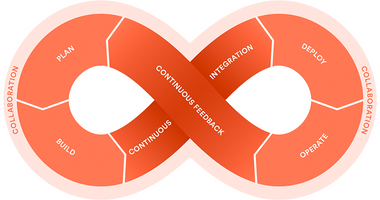
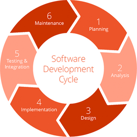

<!doctype html><html lang="en" class="no-js"><head><meta charset="utf-8"><meta name="viewport" content="width=device-width,initial-scale=1,shrink-to-fit=no"><meta name="description" content="Enterprise consulting service that help minimize ongoing development expenses and improve the quality of your software product."><title>Sergey Morkovkin - Consulting Services</title><link rel="preload" href="fonts/Icons.woff2" as="font" type="font/woff2" crossorigin><link rel="preload" href="fonts/Montserrat-Light-Normal.woff2" as="font" type="font/woff2" crossorigin><link rel="preload" href="fonts/Montserrat-Medium-Normal.woff2" as="font" type="font/woff2" crossorigin><link rel="preload" href="fonts/Montserrat-Regular-Normal.woff2" as="font" type="font/woff2" crossorigin><link rel="preload" href="fonts/Montserrat-Thin-Normal.woff2" as="font" type="font/woff2" crossorigin><style>@font-face{font-family:Icons;font-style:normal;font-weight:400;font-display:block;src:url(fonts/Icons.woff2) format('woff2'),url(fonts/Icons.woff) format('woff')}@font-face{font-family:Montserrat;font-style:normal;font-weight:300;font-display:swap;src:local('Montserrat Light'),local('Montserrat-Light'),url(fonts/Montserrat-Light-Normal.woff2) format('woff2'),url(fonts/Montserrat-Light-Normal.woff) format('woff')}@font-face{font-family:Montserrat;font-style:normal;font-weight:500;font-display:swap;src:local('Montserrat Medium'),local('Montserrat-Medium'),url(fonts/Montserrat-Medium-Normal.woff2) format('woff2'),url(fonts/Montserrat-Medium-Normal.woff) format('woff')}@font-face{font-family:Montserrat;font-style:normal;font-weight:400;font-display:swap;src:local('Montserrat Regular'),local('Montserrat-Regular'),url(fonts/Montserrat-Regular-Normal.woff2) format('woff2'),url(fonts/Montserrat-Regular-Normal.woff) format('woff')}@font-face{font-family:Montserrat;font-style:normal;font-weight:100;font-display:swap;src:local('Montserrat Thin'),local('Montserrat-Thin'),url(fonts/Montserrat-Thin-Normal.woff2) format('woff2'),url(fonts/Montserrat-Thin-Normal.woff) format('woff')}</style><link rel="shortcut icon" href="favicon/favicon.ico"><link rel="icon" type="image/png" sizes="16x16" href="favicon/favicon-16x16.png"><link rel="icon" type="image/png" sizes="32x32" href="favicon/favicon-32x32.png"><script src="startup.js"></script><link rel="stylesheet" href="index.css"></head><body data-plugin=""><div class="wrapper"><style>.warning{display:none;width:100%;height:3rem}.warning>.message{display:none;position:fixed;top:0;left:0;right:0;z-index:1500;background:#fd7e14;color:#fff}.warning>.message{line-height:1.5rem;padding:1rem;text-align:center;border-bottom:1px solid #fff}.warning>.message>a{color:#fff;text-decoration:underline}</style><!-- If JavaScript is disabled, show warning --><noscript><style>.warning,.warning>.no-js{display:block}</style></noscript><!-- If Internet Explorer < 10, show warning --><!--[if IE]><style>.warning, .warning > .no-ie {display: block;}</style><![endif]--><div class="warning"><div class="message no-js">Your browser has JavaScript disabled. This will degrade site experience.</div><div class="message no-ie">Your browser is outdated and pares down site experience. Please consider <a href="https://outdatedbrowser.com" target="_new">upgrading</a>.</div></div><header class="header"><div class="container"><div class="navbar"><a class="edge" href="index"></a><nav class="menu"><a class="item" href="consulting">Consulting</a> <a class="item" href="development">Development</a> <a class="item" href="management">Management</a> <a class="item" href="blog">Blog</a> <a class="item" href="contacts"><span class="btn btn-contact">Contact Me</span></a></nav></div><h1 class="page-title page-title-sm-big"><span class="d-inline-block d-md-none">Consulting</span> <span class="d-none d-md-inline-block">Consulting Services</span></h1><div class="padding"></div></div></header><main role="main" data-plugin="modal-dialog"><section class="section-consulting-intro"><div class="container"><div class="row row-indent"><div class="main col-12 col-lg-7 col-xl-8 order-last order-lg-first"><p class="text-first">My combination of technical and management expertise offers strategic guidance for your software production needs.</p><p>Through a thorough analysis and smart technical decisions I can reduce development costs and increase the quality of your product.I have the experience, tools, and knowledge of technologies todesign the demanding custom solution that you are looking for.</p><h5 class="quote text-center my-md-5">Help reduce development costs and<br class="d-none d-sm-inline">make your product stand out</h5><br class="d-none d-md-inline"></div><div class="side col-12 col-lg-5 col-xl-4 order-first order-lg-last"><div class="card card-intro card-intro-shape"><h6 class="title text-uppercase text-white font-weight-bold mb-4"><span class="d-none d-lg-inline">Project Kickstart<br>Support</span> <span class="d-inline d-lg-none">Project Kickstart Support</span></h6><div class="list-stack mb-0 text-center"><ul class="list list-tick text-white"><li><span>Project &amp; business analysis</span></li><li><span>Proof-of-concept creation</span></li><li><span>System architecture design</span></li></ul><ul class="list list-tick text-white"><li><span>Infrastructure setup, CI/CD</span></li><li><span>Workflow integration, SDLC</span></li></ul></div></div></div></div></div></section><section class="section-consulting-tasks" data-plugin="rellax-parallax"><div class="container"><div class="row row-indent"><div class="side col-12"><div class="rellax-container"><div class="rellax shape shape-3" data-rellax-speed="1.00" data-rellax-min="-50" data-rellax-max="50"></div></div><div class="card card-green"><div class="card-body"><div class="list-stack mb-0"><ul class="list list-tick-alt"><li><span>Optimize development expenses</span></li><li><span>Establish an effective team processes</span></li><li><span>Manage risks and guarantee delivery</span></li></ul><ul class="list list-tick-alt"><li><span>Guarantee high quality standards</span></li><li><span>Identify and avoid potential problems</span></li><li><span>Create seamless business perspective</span></li></ul></div></div></div></div><div class="main col-12"><p class="mt-3 mb-5">As you will see below, often, all of the <b>business and technical issues are interconnected</b>, creating a snowball effect of complications in a business. Consequently, if one problematic area is identified, then chances are that other areas are affected as well.</p></div></div></div></section><section class="section-consulting-diagram bg-light"><div class="container"><div class="row row-indent"><div class="main col-12"><h4 class="title d-inline-block d-md-none">Business &amp; Technical<br>Problems:</h4><h4 class="title title-left d-none d-md-inline-block">Business Problems:</h4><h4 class="title title-right d-none d-md-inline-block">Technical Problems:</h4><div class="hover-diagram" data-plugin="hover-diagram"><div class="timeline time-line-arrow-down d-none d-md-block"><div class="tick check" data-id="c1"></div><div class="tick check" data-id="c2"></div><div class="tick check" data-id="c3"></div><div class="tick check" data-id="c4"></div><div class="tick check" data-id="c5"></div></div><div class="card card-arrow card-arrow-bottom card-arrow-right check" data-id="b1">Weakening position on market</div><div class="card card-arrow card-arrow-bottom card-arrow-left check" data-id="t1">Innovation-resistant architecture</div><div class="card card-arrow card-arrow-bottom card-arrow-right check" data-id="b2">Excessive development costs</div><div class="card card-arrow card-arrow-bottom card-arrow-left check" data-id="t2">Cluttered project codebase</div><div class="card card-arrow card-arrow-bottom card-arrow-right check" data-id="b3">Unsatisfactory product quality</div><div class="card card-arrow card-arrow-bottom card-arrow-left check" data-id="t3">Poor system performance</div><div class="card card-arrow card-arrow-bottom card-arrow-right check" data-id="b4">Lack of development resources</div><div class="card card-arrow card-arrow-bottom card-arrow-left check" data-id="t4">Unknown system vulnerabilities</div><div class="card card-arrow card-arrow-bottom card-arrow-right check" data-id="b5">Inability to create new features</div><div class="card card-arrow card-arrow-bottom card-arrow-left check" data-id="t5">System scalability problems</div><div class="conclusion">QUALITY OF THE SOFTWARE PRODUCT<br class="d-none d-md-inline">DIRECTLY AFFECTS BUSINESS PROFIT</div></div></div></div></div></section><section class="section-consulting-cicd"><div class="container"><div class="row row-indent"><div class="main col-12 col-md-7"><h3 class="title mb-4">CI/CD Process</h3><p>It is always a good idea to fully automate repetitive tasksand standardize team processes. Such a practice eliminates human mistakes and greatly saves development resources. This is an indispensable measure that ensures the efficiency of your software production business.</p><h5 class="quote text-center mb-4 d-block d-md-none">Automate and standardize<br>development processes</h5><p>An acknowledged and systematic way to achieve this is establishing a Continuous Integration and Continuous Delivery processes on the project. For enterprise teamsI extensively use Atlassian stack:</p><div class="text-center mx-3"><picture><source srcset="images/consulting-atlassian.webp, images/consulting-atlassian@2x.webp 2x" type="image/webp"><source srcset="images/consulting-atlassian.png, images/consulting-atlassian@2x.png 2x" type="&quot;image/png&quot;"></picture><!--              <picture>--><!--                --><!--              </picture>--></div></div><div class="side col-12 col-md-5"><picture><source srcset="images/consulting-cicd.webp, images/consulting-cicd@2x.webp 2x" type="image/webp"><source srcset="images/consulting-cicd.png, images/consulting-cicd@2x.png 2x" type="&quot;image/png&quot;"></picture><!--            <picture>--><!--              &lt;!&ndash;<source media="(max-width: 767px)" srcset="images/pixel.png">&ndash;&gt;--><!--              --><!--            </picture>--><h5 class="quote text-center mt-2 mx-n5 d-none d-md-block">Automate and standardize<br>development processes</h5></div></div></div></section><section class="section-consulting-sdlc"><div class="container"><div class="row row-indent"><div class="side col-12 col-md-4 order-last order-md-first"><picture><source srcset="images/consulting-sdlc.webp, images/consulting-sdlc@2x.webp 2x" type="image/webp"><source srcset="images/consulting-sdlc.png, images/consulting-sdlc@2x.png 2x" type="&quot;image/png&quot;"></picture><!--            <picture>--><!--              &lt;!&ndash;<source media="(max-width: 767px)" srcset="images/pixel.png">&ndash;&gt;--><!--              --><!--            </picture>--></div><div class="main col-12 col-md-8"><h3 class="title mb-4">SDLC Process</h3><p>The Software Development Lifecycle is a systematic process for building software. In my practice I use SDLC to produce high-quality software which meets customer expectations. The process ensures that development is completed in the pre-defined time frameand cost.</p><p>When choosing a development model, I always rely on theprinciple of expediency. Methodologies and processes shouldincrease efficiency and help work, and not stand in the way of themain goal.</p></div></div></div></section><section class="section-consulting-citation"><div class="container"><div class="row row-indent"><div class="main col-12"><div class="quotation from-left"><h5 class="quote">As I have expertise in both the management and development side,<br class="d-none d-xl-inline">I’m able to determine and improve the health of your enterprise.</h5></div></div></div></div></section><section class="section-consulting-words"><div class="container"><div class="row row-indent"><div class="main col-12"><p>By identifying the issue and providing a remedy to all of the areas that are holding your business back, you will increase the quality of your product as you will improve your product position on the market and keep your business perspective safe.</p></div></div></div></section><section class="section-base-client-faces" data-plugin="lazy-load"><div class="container"><div class="row"><div class="main col-12"><h3 class="title line-both text-nowrap">Client Reviews</h3><ul class="faces"><li class="item"><a href="javascript:openReview(1)"><div class="face face-1"></div><span class="name">Andrew Kozin</span><span class="role">Customer Manager</span></a></li><li class="item"><a href="javascript:openReview(2)"><div class="face face-2"></div><span class="name">Nicolas Mercier</span><span class="role">Project Manager</span></a></li><li class="item"><a href="javascript:openReview(3)"><div class="face face-3"></div><span class="name">Ted Girata</span><span class="role">Project Manager</span></a></li><li class="item"><a href="javascript:openReview(4)"><div class="face face-4"></div><span class="name">Christine Shellenbarger</span><span class="role">UI/UX Designer</span></a></li><li class="item"><a href="javascript:openReview(5)"><div class="face face-5"></div><span class="name">Manu Lohiya</span><span class="role">Project Owner</span></a></li><li class="item"><a href="javascript:openReview(6)"><div class="face face-6"></div><span class="name">Aaron Cowdin</span><span class="role">DevOps</span></a></li><li class="item"><a href="javascript:openReview(7)"><div class="face face-7"></div><span class="name">Edward Kogan</span><span class="role">Senior Manager</span></a></li><li class="item"><a href="javascript:openReview(8)"><div class="face face-8"></div><span class="name">Hiren Sodha</span><span class="role">Senior Engineer</span></a></li><li class="item"><a href="javascript:openReview(9)"><div class="face face-9"></div><span class="name">Eugene Reykh</span><span class="role">CTO</span></a></li></ul></div></div></div></section><section class="section-base-client-logos" data-plugin="lazy-load"><div class="container"><div class="row"><div class="main col-12"><h3 class="title line-both text-nowrap">Case Studies</h3><ul class="logos"><li class="item"><a class="logo logo-1" href="javascript:openProject(1);" aria-label="Skype"></a></li><li class="item"><a class="logo logo-2" href="javascript:openProject(2);" aria-label="Presence Learning"></a></li><li class="item"><a class="logo logo-3" href="javascript:openProject(3);" aria-label="Profusa"></a></li><li class="item"><a class="logo logo-4" href="javascript:openProject(4);" aria-label="Twilio"></a></li><li class="item"><a class="logo logo-5" href="javascript:openProject(5);" aria-label="Softonic"></a></li></ul></div></div></div></section><section class="section-base-consultation"><div class="container"><div class="wrap row no-gutters"><div class="main col-12 col-lg-7"><h3 class="title">Get a free consultation</h3><p class="words">Let's figure out your project cost and options</p></div><div class="side col-12 col-lg-5"><a class="btn btn-primary btn-lg mt-1" href="contacts">Estimate Your Project</a></div></div></div></section></main><footer class="footer"><div class="container"><a class="edge" href="index" aria-label="Go to homepage"></a><nav class="menu"><a class="item" href="consulting">Consulting</a> <a class="item" href="development">Development</a> <a class="item" href="management">Management</a> <a class="item" href="blog">Blog</a> <a class="item" href="contacts">Contact Me</a></nav></div><div class="container-fluid"><div class="copy"><span>&copy; Copyright 2018. All rights reserved</span></div></div><div class="container"><a class="back-to-top d-none d-md-block" href="#" aria-label="Back to TOP"><i class="icon icon-page-to-top"></i></a><nav class="social-icons"><a class="icon icon-social-medium" href="#" aria-label="Follow on Medium"></a> <a class="icon icon-social-facebook" href="#" aria-label="Follow on Facebook"></a> <a class="icon icon-social-twitter" href="#" aria-label="Follow on Twitter"></a> <a class="icon icon-social-rss" href="#" aria-label="Follow via RSS"></a></nav></div></footer></div><script src="index.js"></script></body></html>